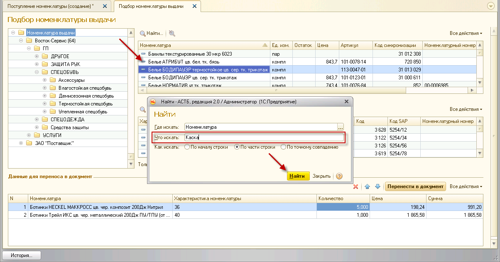

Прием спецодежды и СИЗ может осуществляться как на основании заказа поставщику, так и ручным подбором номенклатуры выдачи.
Если ранее был сформирован заказ поставщику на поставку СИЗ, на его основании можно принять поступившие на склад СИЗ. Для этого необходимо зайти в раздел «Склад», документ «Поступление номенклатуры», и нажать кнопку «Создать». В открывшемся окне заполните поля «Организация», «Склад» и «Поставщик». Во вкладке «Товары» нажмите кнопку «Заполнить» и выберите пункт «Заполнить по заказу поставщику».
Табличная часть заполнится данными в соответствии со сформированным заказом.
Как было сказано выше, при использовании обработки заказов поставщику, рекомендуется принимать товар с учетом созданных заявок. После заполнения табличной части нажмите кнопку «Распределить по заказам». Таким образом, заказы поставщику будут частично закрываться. Если этого не сделать, то при следующем формировании заказа поставщику товар будет числиться и на складе, и в заявке, следовательно, не будет возможности сделать заказ.
Отредактируйте заполненные строки и нажмите кнопку «Провести и закрыть».
Командная панель данной формы содержит следующие кнопки:
 – Создать новый элемент копированием предыдущего;
– Создать новый элемент копированием предыдущего;
 – Удалить текущий элемент;
– Удалить текущий элемент;
 – Переместить текущий элемент вверх;
– Переместить текущий элемент вверх;
 – Переместить текущий элемент вниз.
– Переместить текущий элемент вниз.
Примечание: после автоматического заполнения таблицы в документ «Поступление номенклатуры» можно добавить СИЗ, ранее не включенные в заявку. Если нажать кнопку «Заполнить», а затем выбрать «Подбор номенклатуры выдачи», появится окно выбора номенклатуры выдачи. Ручное добавление номенклатуры, описано в следующей главе.
При ручном приеме происходит подбор номенклатуры поставщика для приема на склад. Для приема зайдите в раздел «Склад», документ «Поступление номенклатуры». Нажмите кнопку «Создать». В открывшемся окне выберите организацию, склад и поставщика. Далее нажмите кнопку «Заполнить» и выберите пункт «Подбор номенклатуры выдачи».
Откроется окно «Подбор номенклатуры выдачи», которое, в свою очередь, будет разделено на четыре окна.
· В окне №1 отображается каталог поставщика по видам СИЗ.
· В окне №2 отображается номенклатура непосредственно выделенного объекта из 1-ого окна.
· В окне №3 отображается характеристика номенклатуры объекта, выделенного в окне №2.
· В окне №4 отображаются выбранные объекты для перемещения в документ приема.
Чтобы поместить нужное СИЗ в окно для перемещения в документ (окно №4), сначала необходимо выбрать нужный элемент из первого окна. Затем следует выбрать СИЗ из списка, представленного в окне №2. Его характеристика отобразится в окне №3 (только для размерных СИЗ). Выберите нужную характеристику (можно выбрать несколько, при помощи клавиши CTRL на клавиатуре), удерживая левую клавишу мыши, переместите в окно №4. После этого укажите требуемое количество СИЗ.
После того, как в окне №4 подготовлен список СИЗ, нажмите кнопку «Перенести в документ».
Примечание: если необходимо переместить все размеры одной номенклатуры, то перемещение необходимо делать не из окна с характеристиками, а из окна №2. В таком случае в окне №4 автоматически заполнятся все размеры, останется только проставить количество номенклатуры. Ненужные строки можно удалить, нажав кнопку 
Для быстрого поиска нужной позиции нажатием выберите папку «Номенклатура выдачи» окне №1. Тогда в списке в окне №2 отобразится вся загруженная в программу номенклатура. Также можно поставить флажок напротив пункта «Только в наличие на складе», тогда отобразятся только те позиции, которые есть на выбранном складе.
Затем необходимо принять определенную номенклатуру, например, защитные каски. Поставьте курсор в таблице №2 в колонку «Номенклатура» и начните набирать наименование «Каска защитная» на клавиатуре, после чего автоматически откроется окно для поиска, нажмите кнопку «Найти». Поиск может быть выполнен по началу строки, по ее части и по точному совпадению.

После подбора нужной номенклатуры нажмите кнопку «Перенести в документ». Затем в окне «Поступление номенклатуры (создание)» нажмите кнопку «Заполнить» и выберите пункт «Распределить по заказам поставщику». Таким образом, заказы поставщику будут частично закрываться.